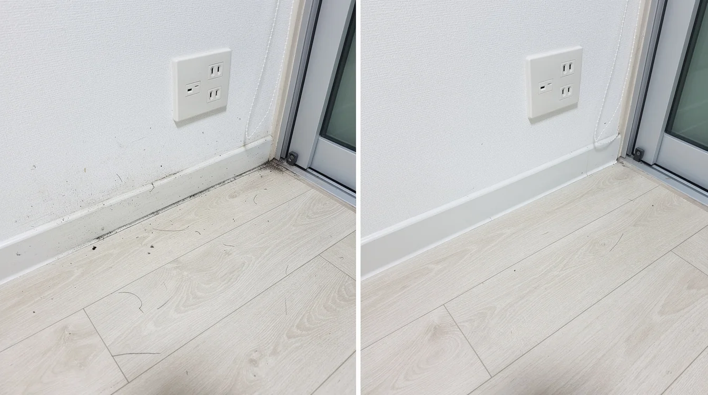
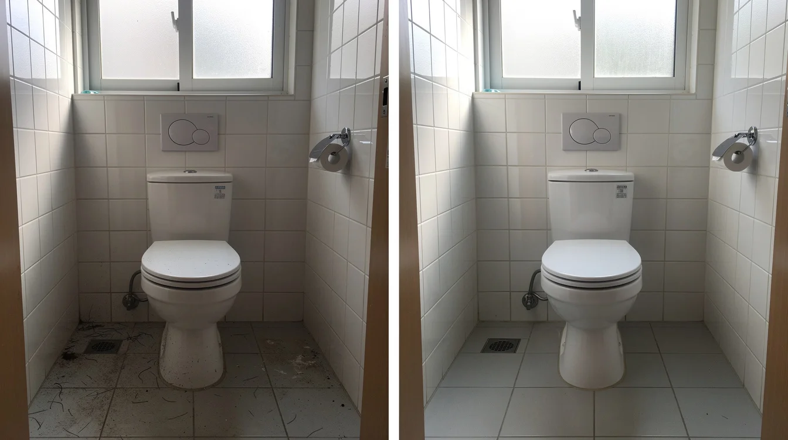
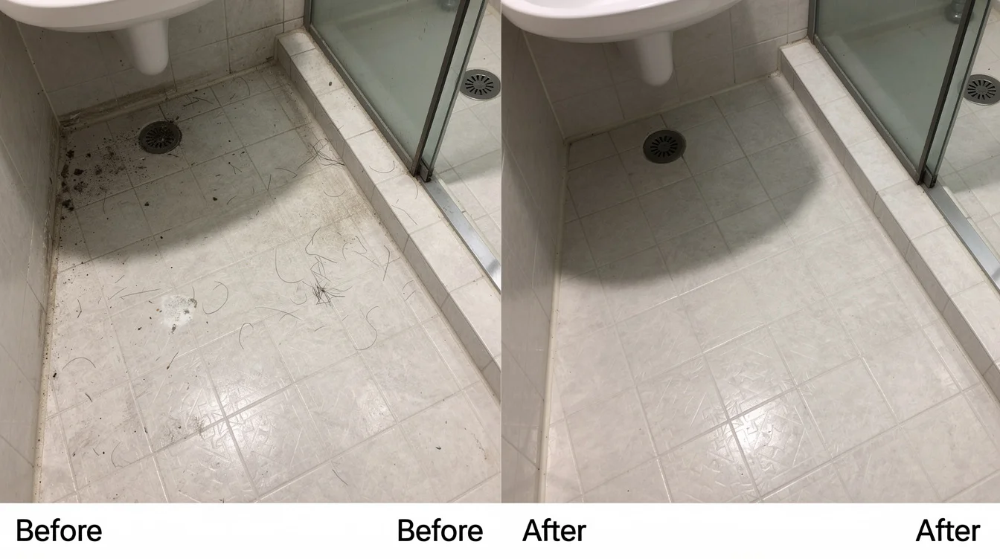
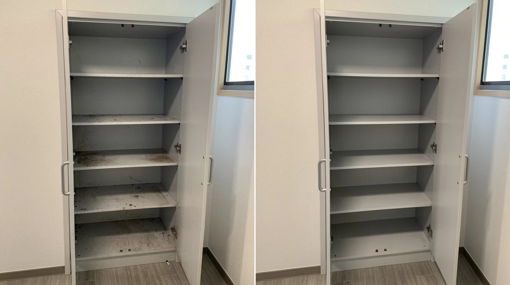

인천 중구 사무실 거주청소 비용 관련 상담에서는 평수뿐 아니라 방·화장실 수, 짐 유무, 오염 상태와 원하는 작업 범위를 같이 확인해야 견적 차이를 줄일 수 있습니다.
예약할 때 체크할 부분
희망 날짜와 입실 또는 이사 시간을 미리 알려주고 주차 가능 여부와 엘리베이터 사용 조건도 함께 확인하면 작업 당일 진행이 수월합니다. 현장 사진이 있다면 오염이 심한 구역이나 특이사항을 상담할 때 함께 전달하는 것도 도움이 됩니다.

체인지클린 상담 안내
체인지클린은 입주청소, 이사청소, 거주청소, 원룸·오피스텔·빌라·아파트 청소와 상가·사무실 청소를 상담하고 있습니다. 인천 중구 사무실 거주청소 비용 관련해서도 현장 정보를 확인한 뒤 필요한 작업 범위와 일정을 안내해드립니다. 정확한 견적은 공간 상태와 요청 범위를 확인한 후 상담하는 방식이 가장 좋습니다.

주방과 욕실
주방은 기름때와 수납장 안쪽 먼지, 싱크대 주변 오염을 확인하고 욕실은 물때와 배수구, 수전, 타일 표면 등을 살펴봅니다. 오래된 고착 오염이나 변색, 손상된 실리콘처럼 일반 세척만으로 원상복구가 어려운 부분은 청소 결과와 별개로 구분해서 보는 것이 좋습니다.

견적 전에 확인할 내용
같은 평수라도 공간 구조와 오염 상태에 따라 작업량이 달라질 수 있습니다. 상담할 때 주소와 공간 종류, 평수 또는 면적, 방과 화장실 개수, 베란다 유무, 짐과 폐기물 유무를 알려주면 보다 정확하게 범위를 확인할 수 있습니다. 신축 분진이 많은 입주 현장과 기존 생활오염이 남아 있는 이사 현장은 중점 작업 구역도 달라질 수 있습니다.

기본적으로 살펴볼 청소범위
현관과 신발장, 방과 거실, 몰딩과 문틀, 주방 수납장과 후드 외부, 욕실과 배수구 주변, 베란다와 창틀, 바닥과 모서리 등을 순서대로 확인합니다. 수납공간은 내부까지 작업하는지, 창문은 내창과 창틀 중 어디까지 포함되는지처럼 업체마다 기준이 달라질 수 있는 항목은 예약 전에 확인하는 편이 좋습니다.
창틀·베란다와 바닥
창틀에는 외부 먼지와 분진이 쌓이기 쉽고 베란다는 배수구 주변이나 모서리에 오염이 남기 쉽습니다. 바닥은 위쪽 먼지 제거와 다른 구역 세척이 끝난 뒤 마무리하는 방식이 효율적입니다. 외창처럼 안전장비가 필요한 구역은 기본 범위에서 제외될 수 있으므로 사전에 포함 여부를 확인해야 합니다.
거주청소 비용
인천 중구 사무실 거주청소 비용 검색 시에는 광고 문구보다 실제로 어디까지 청소하는지, 추가 비용이 생기는 조건은 무엇인지, 작업 후 검수는 어떻게 진행하는지를 비교해보는 것이 좋습니다. 특히 평수만으로 모든 현장의 작업량을 판단하기 어려우므로 구조와 오염 상태를 함께 전달해 상담받는 것이 좋습니다.